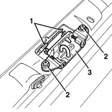
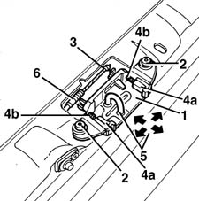
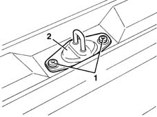
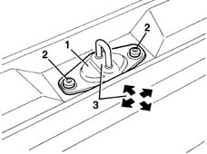

7015B18 TAILGATE LOCK STRIKER - R+R
- Path
- Procedures > 70 FITTINGS > 7015 TAILGATE/FLAP > 7015B TAILGATE LOCKING/OPENING DEVICES > 7015B18 TAILGATE LOCK STRIKER - R+R
- Kind
- repair procedure (removal / refitting; the operation number is the code)
- Applies to
- all engines; all production periods
- Interactive page
- https://sloeber94.github.io/elrnDB-fMltpl/en/#/2892120
Applies to: all engines; production: fino a 05/99, da 06/99 a 03/02
 Removing
Removing
 Refitting
Refitting7040B22 luggage compartment/load platform moulding - r+r
1. Disconnect the operating cable.
2. Undo the bolts.
3. Remove the striker.

Applies to: all engines; production: fino a 05/99, da 06/99 a 03/02
Refitting
RemovingCheck that the striker is undamaged.
1. Fit the striker.
2. Screw in the retaining bolts without tightening.
3. Reconnect the operating cable.
4. If necessary, to ensure that the shoes (4a) slide freely, lubricate them only on the slide pin (4b).
5. Use the bolt slots to move the striker into the correct position.
Permitted adjustment movements are indicated by arrows.
6. Adjust the operating cable using the anchoring grooves on the end of the sheath.

Applies to: all engines; production: fino a 05/99, da 06/99 a 03/02
Tighten the fixing bolts.
 | Fastening | Component | Ø | Value (daNm) |
|---|---|---|---|---|
- | Bolt | TAIL-GATE LOCK STRIKER | M6 | 0.6 - 1.1 |
Check that the striker and tailgate lock fit together properly, and are aligned when the tailgate is closed.
7040B22 luggage compartment/load platform moulding - r+r
.
Applies to: all engines; production: da 09/03, da 04/02 a 08/03, da 06/04, fino a 05/04
Removing
Refitting7040B22 luggage compartment/load platform moulding - r+r
1. Undo the bolts.
2. Remove the striker.

Applies to: all engines; production: da 09/03, da 04/02 a 08/03, da 06/04, fino a 05/04
Refitting
RemovingCheck that the striker is undamaged.
1. Fit the striker.
2. Screw in the retaining bolts without tightening.
3. Use the bolt slots to move the striker into the correct position. Permitted adjustment movements are indicated by arrows.

Applies to: all engines; production: da 09/03, da 04/02 a 08/03, da 06/04, fino a 05/04
Tighten the striker fixing bolts.
| Fastening | Component | Ø | Value (daNm) |
|---|---|---|---|---|
- | Bolt | TAIL-GATE LOCK STRIKER | M6 | 085 |
Check that the striker and tailgate lock fit together properly, and are aligned when the tailgate is closed.
7040B22 luggage compartment/load platform moulding - r+r
.